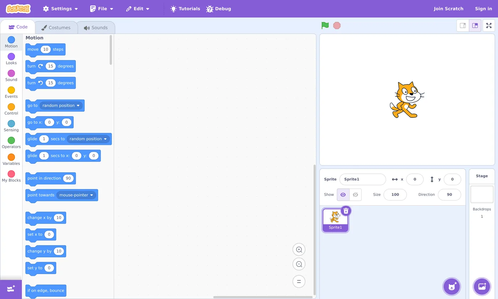

📝 Lesson 1.1: What Is Scratch & Why Kids Love It
Before you teach it, understand it. In 25 minutes you'll know exactly what Scratch is, why it works so well for children, and why it's the perfect first step into coding.
📚 What You'll Learn
By the end of this lesson, you will be able to:
- Explain, in one sentence, what Scratch is
- Describe how block-based coding differs from typed code
- List three reasons Scratch is great for young learners
- Introduce Scratch to your child with confidence
Estimated Time: 25 minutes • Coding needed: none
In This Lesson
Why coding — and why now?
Your child doesn't need to become a software engineer. But learning to code teaches something every kid can use: how to break a big problem into small steps, try an idea, see what happens, and fix it. That's problem-solving, creativity, and resilience rolled into one — and it happens to be fun.
The hard part for most families isn't the child's interest. It's that the parent feels unqualified to help. This course removes that barrier. You don't need to know how to code today. You just need to stay one comfortable step ahead — and this lesson is that first step.
You are not learning to be a programmer. You're learning to be a coding buddy — curious, encouraging, and just informed enough to help.
🌱 Growth mindset: the most important thing you'll teach isn't code
Psychologists describe two ways people think about ability. A fixed mindset says, "I'm just not a computer person — you either have it or you don't." A growth mindset says, "I can't do this yet, but I can get better with practice." Research on learning keeps finding the same thing: the second belief is the one that helps people improve, because it turns every stumble into information instead of a verdict.
- Add the word "yet." "I don't understand loops" becomes "I don't understand loops yet." One tiny word turns a dead end into a work in progress — for you and for your child.
- Plateaus are normal. Some sessions you'll feel like you're flying; others you'll feel stuck for a while. That flat stretch is usually your brain consolidating what it learned — not a sign you've hit your limit.
- It's a marathon, not a sprint. Twenty relaxed minutes a few times a week beats one exhausting three-hour cram. Nobody is timing you, and there's no test at the end.
Why it matters for you: as an adult beginner, the inner voice saying "I'm too old / not techy enough for this" is the biggest obstacle you'll face — much bigger than any block. Why it matters for your child: kids learn how to handle frustration by watching the grown-ups beside them. When they see you hit a bug, shrug, and say "Hmm, it doesn't work yet — let's find out why," you're teaching the lesson that outlasts Scratch itself.
🎓 Learn It: What Scratch actually is
Scratch is a free website where kids make their own games, animations, and stories by snapping together colorful blocks instead of typing code. That's the whole idea in one sentence.
It was created by the MIT Media Lab and is run by the non-profit Scratch Foundation. It's used by tens of millions of children around the world, in over 70 languages, and it's completely free.

🧩 The three words that unlock Scratch
Sprite — a character or object (the cat is a sprite). Stage — the screen where the action happens. Blocks — the instructions you snap together to make sprites do things.
Learn these three and you can already follow along with your child.
🎓 Learn It: Blocks vs. typing code
"Real" coding usually means typing exact words and symbols. One wrong comma and nothing works — frustrating for adults, brutal for kids. Scratch throws that barrier away. Blocks only snap together if they make sense, so children can't create a "spelling mistake." They focus on ideas, not punctuation.
Here's the same simple program in typed code and in Scratch blocks:
Typed code (e.g. Python)
when program starts:
move(10)
say("Hello!", 2)Miss a colon or misspell say and it breaks.
The same thing in Scratch
Snaps together like LEGO. Nothing to misspell.
Notice the colors. In Scratch, every block has a color that tells you its category — blue for movement, purple for looks, gold for events, and so on. Kids learn to "read" a program by its colors before they can read the words fluently.
- Motion
- Looks
- Sound
- Events
- Control
- Sensing
- Operators
- Variables
✅ Why this matters for your child
Because blocks can't "break" from typos, kids get to the fun part — seeing their idea come alive — almost instantly. That quick reward is exactly what keeps them coming back.
🎓 Learn It: Why kids love it
Scratch is engineered around how children actually learn: by playing, tinkering, and showing off. Here's what makes it click:
| What kids feel | What's really happening (the learning) |
|---|---|
| "I made the cat dance!" | Sequencing — putting steps in the right order |
| "It keeps spinning forever!" | Loops — repeating actions |
| "When I press space, it jumps!" | Events — responding to input |
| "If it touches the wall, it bounces." | Conditionals — decision-making logic |
| "I remixed my friend's game." | Reading and modifying existing code |
Every "I made it do X!" moment is a real computer-science concept in disguise. Your job isn't to lecture on these terms — it's to celebrate the moment and, now and then, name what they just did.
🎓 Learn It: Free, and made for kids
- 100% free. No paid tiers, no ads for products, no in-app purchases.
- Two ways to use it. Online in a browser at scratch.mit.edu, or via the free downloadable Scratch app for offline use.
- You can start without an account. Click "Start Creating" and play immediately — an account just lets you save and share (more in Lesson 1.2).
- Built with child safety in mind. Accounts for kids use a parent's email, comments are moderated, and personal info is discouraged. We'll cover safe sharing in Module 5 (Lesson 5.2).
⚠️ One thing to know up front
Scratch has a community where kids can share and comment on projects. It's well-moderated and kind by design, but it is a form of social interaction. For now you can ignore it entirely — Module 1 stays fully offline-friendly and private. We'll set up sharing safely later, together.
💬 Teach It: Introduce Scratch to your child
You've got the background. Here's how to spark your child's interest in the very first conversation — no screen required yet.
Say something like this
"Want to make your own game where you decide the rules? There's a free thing called Scratch where you snap colorful blocks together and a little cat does whatever you tell it. Want to try making it talk?"
Lead with their interest — a game, a joke-telling cat, a dancing character, a pet cartoon. The word "make" beats the word "learn" every time.
Age-by-age tips
👧 Ages 5–7
Sit together the whole time. Consider ScratchJr (a tablet app) if reading is still tricky — it uses pictures instead of words. Keep sessions to 15–20 minutes.
🧒 Ages 8–11
The sweet spot for Scratch. Start side-by-side, then let them drive the mouse. Cheer discoveries; resist grabbing the mouse to "fix" things.
🧑 Ages 12+
Give more independence. Challenge them: "Can you make it keep score?" They may outrun you fast — that's a win, not a problem.
Common myths to drop (yours and theirs)
- "I'm not good with computers." You don't have to be. If you can drag a block, you can help.
- "Coding is only for boys / for math whizzes." Scratch is art, music, and storytelling as much as logic.
- "We'll break something." You can't. There's no wrong move — only experiments.
🎬 Your first-session goal
Don't aim to "teach coding" on day one. Aim for a single delighted "whoa, I did that!" That feeling is the hook. Everything else builds on it.
🎯 Quick Check
A couple of quick questions to lock it in. Click an answer.
Question 1: What is the single biggest advantage of block-based coding for children?
Question 2: In Scratch, what does a block's color tell you?
Question 3: What's the best first-session goal with your child?
📓 Learning Journal
How to keep your journal
Throughout this course, every lesson ends with a few journal prompts. Here's the whole system — it takes five minutes a lesson:
- Pick any format. A paper notebook, a notes app, a document on your computer — whatever you'll actually open again. Paper is lovely because you can sketch scripts and arrows.
- Date each entry and write the lesson number at the top so you can find things later.
- Write honestly, not neatly. Short bullet points are fine. Nobody grades this; it's a record of your thinking.
- Reread it now and then. In a few weeks, look back at today's entry. Seeing how far you've come is one of the best motivators there is.
Your first entry: before you begin
Start with a "why" page. Answer these in a few sentences each:
- Why do you want to learn this? What made you sign up — a curious child, a school requirement, your own itch to finally "get" coding?
- What do you hope to create with your child? A game? A birthday card that dances? A silly story starring the family pet? Dream a little.
- What worries you about it? Not being techy enough? Your child getting frustrated? Screen time? Write the worry down — naming it makes it smaller, and you'll enjoy crossing it off later.
Lesson 1.1 reflection
- Key concepts: In one sentence of your own, what is Scratch? What do the words sprite, stage, and blocks mean?
- What clicked: Did the "blocks can't have typos" idea change how you think about coding — or about whether you can do it?
- Questions & confusion: What are you still wondering about? (Accounts, safety, which age to start… jot it down — later lessons will answer most of it.)
- Ideas to try: Based on what your child loves right now, what's one project idea you could pitch to them?
- Progress & feelings: On a scale of 1–10, how confident do you feel about helping with Scratch right now? Write the number down — you'll compare it at the end of the course.
💡 Teach It tip: Give your child their own "coder's notebook" — a cheap spiral notebook they can decorate is perfect. After each session they can draw what their sprite did, write the name of a new block, or doodle an idea for next time. Younger kids can just draw; older kids can plan projects in it. It becomes a proud record of everything they've made.
Summary & What's Next
🎓 Key Takeaways
- Scratch is a free MIT-made site where kids build games, stories, and animations by snapping colorful blocks together.
- Block coding removes typos and syntax errors, so kids reach the fun fast.
- A block's color shows its category; the three key words are sprite, stage, and blocks.
- Your role is "coding buddy," not expert. First-session goal: one "I made that!" moment.
🏅 What You've Accomplished
- Learned what Scratch is and who makes it
- Understood why blocks beat typing for young coders
- Picked up the three key words: sprite, stage, blocks
- Planned how to introduce Scratch to your child
📋 Before the Next Lesson
- Visit scratch.mit.edu and click around — you can't break anything
- Have the "want to make your own game?" chat with your child
- Write your first journal entry (and hand your child a coder's notebook)
❓ Common Questions at This Stage
Do I need to be good at math to help with Scratch?
No. Beginner Scratch uses about as much math as counting steps and picking a number of seconds. Later you'll meet a few coordinates and a score counter, and we'll explain each one in plain language when it comes up. If you can read a recipe, you can follow a Scratch script.
Is my child too young (or too old) for Scratch?
Scratch itself fits most kids from about 8 to 16, with ages 8–11 as the sweet spot. Five- to seven-year-olds can enjoy it sitting beside you, and ScratchJr (covered in Lesson 5.3) is designed just for them. Teens often race ahead — which is exactly what you want.
Should I make an account right away?
Not yet. You can start creating without one. An account only matters once you want to save projects online or share them, and we'll walk through that — including kid-account safety — in Lesson 1.2 and again in Lesson 5.2.
🔭 Looking Ahead
Now that you know what Scratch is, let's open it and look around. In Lesson 1.2: A Guided Tour of the Scratch Editor we'll take a guided tour of the editor — every button, panel, and that all-important green flag — so nothing feels mysterious.
💛 Encouragement for the Journey
You just took step one — and that wasn't so scary, was it? Plenty of parents never start because they think coding "isn't for them." You already proved that wrong. Keep going: in the very next lesson, you'll get your hands on the real thing.